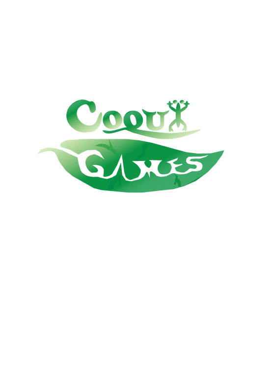

Portfolio
Here is my portfolio showing off all the works of digital art that I have created so far in college. Please make yourself comfortable and enjoy what i have to offer.
Photoshop

This is my first project for my Introduction to Digital Media class in college. All I had to do was make a Photshop collage of my own choise. I decided to duplicate myself and have my duplicates do random stuff in my room with a couple of "guests".
Illustrator
This is my logo for a fictional video game company that I created. Hopefully I could use this logo one day if I do end up founding my own indie company.
InDesign
This a fictional magazine I worked on that was inspired by other bigger game magazines such as Gameinformer, Pc Gamer, and Nintendo Power.
Audition
This is a fictional radio commercial that I made using Adobe Audition.
Premiere
This is a video I made for a commercial based on a meme that's kind of dead.